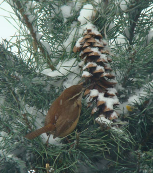

I saw the Carolina Wren more during the snowy winter of 2009-2010 than previously. It appears out of the blue – literally – and feeds on sunflower seeds, suet cakes and a lard-mixed seed concoction I made into balls for the suet ball feeder. I must say, it has captured my heart. The Carolina wren is a bit larger than the house wren – six inches - and is less frenetic in its actions, allowing me to get some decent photos.
Each year I buy a real Christmas tree for the birds. One year I lucked onto a beautiful 6 ft. Fraser fir close to Christmas marked, "FREE"! I dashed into the store, confirmed its "cost" ("If the sign says free, then it's free.") and commandeered a sack boy to help me load it into my Escort station wagon. I tipped him $2. I "planted" it in the ground, and it served well to give the birds some shelter and protection from weather and predators. As I told "Frasier," he was the most beautiful Christmas tree, I'd ever had!
I smeared chunky peanut butter and mixed birdseed combo onto pine cones and tied them to the tree's branches. I first spied the Carolina wren gleaning some specks of peanut butter from a cone that the fox squirrel had left due to lack of energy or laziness – I believe he nipped off the branch onto which I'd tied one cone and carried it away to enjoy at his leisure.
Since then I've seen the Carolina wren frequently. One day he sat within the pine branches for some time before flying over to the sunflower feeder. I've grown to love the little darling!
Carolina wrens are sensitive to the cold, so perhaps that is why it frequents my feeding station where nutrients are readily available. They are second largest of the wrens, the Cactus wren being largest. It is reddish brown with a "pumpkin" colored breast, black barring on tail and wing feathers. It has a longish bill that is designed to seek out insects from old decaying wood, under tree bark, and the like. They have been known to eat tree frogs and small lizards, and in winter they depend on seeds, berries and any other small fruit they can find. They do not migrate, and their numbers may decrease after a severely cold winter, but they are unusually successful breeders, so the population bounces back.
In the warmer months I have seen a Carolina wren in and about my neighbors' aging woodpile. I believe they nest in or near it to have access to all those insects in the wood. Carolinas also come to feeders for suet and peanuts.
I have to remind myself every year that the piercing whistle I hear is not a new bird but is the Carolina wren. For a tiny being, he has an impressive voice. Wikipedia reports its song is "teakettle-teakettle-teakettle" or "sweetheart-sweetheart-sweetheart" but admits it will render many different songs depending on its mood or the situation. Only the male birds sing the loud song.
The wrens are creative nesters, using a natural cavity or any nooks or crannies in outbuildings, porches, flowerpots, even making its home in a front door wreath if it suits. A friend has told me she stopped using her front door when a wren (not necessarily a Carolina) had built its nest in the wreath.
Pairs may mate for life. I find that endearing. As much as I like the house wren, the male has a reputation of being quite promiscuous, sometimes maintaining more than one "household" at a time. The male house wren also is classified as a predator, destroying other birds' eggs or nestlings within his established territory. I was pained to learn that!
The female Carolina lays from four to six eggs within several days and perhaps three times a year. The oval, grayish spotted eggs are incubated by the female, the male feeding her during this period. Both parents feed the young, which fledge about two weeks after hatching.
The Carolina wren is a welcome visitor in the cold of winter when the house wren has migrated to warmer climes. I am always thrilled when I see his plump little body foraging around my feeders and the birds' Christmas tree. The other day while chickadees and nuthatches were feasting on sunflower seeds, I noticed a Carolina wren on my patio, perhaps searching for "hibernated" insects. He perhaps follows the chickadee-nuthatch-titmouse-downy woodpecker flock to benefit from the chickadee's habit of alerting by song the availability of food or the presence of a predator.
The Carolina wren is the state bird of South Carolina. For a time it was the Mockingbird, but the Carolina wren has been restored as the official state bird.
